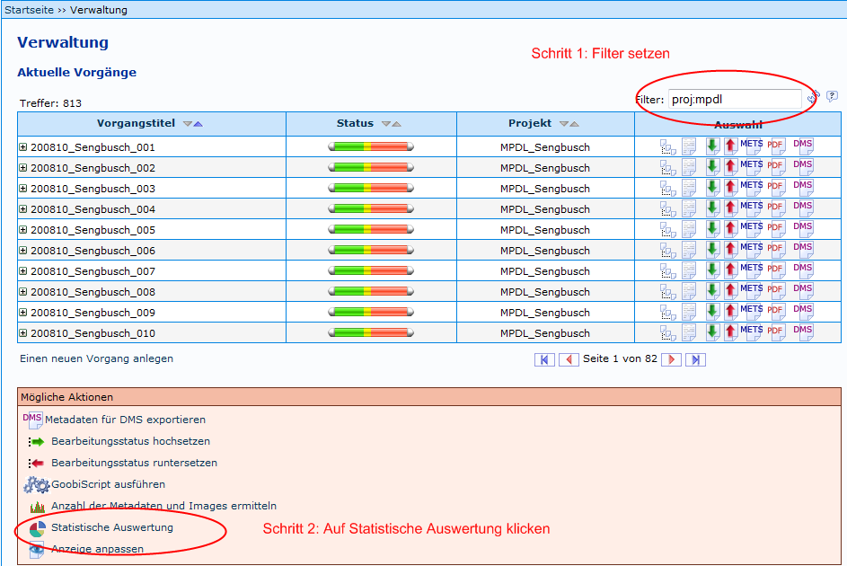
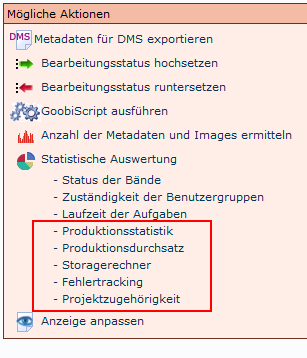
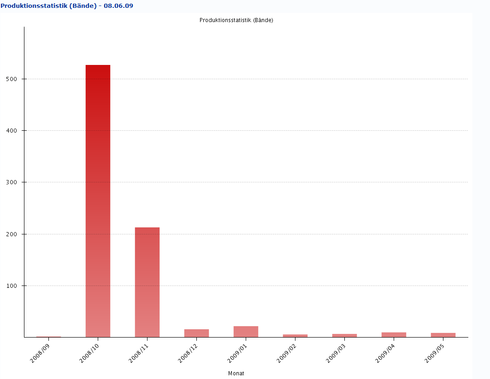
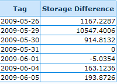

Produktionsstatistik
©2009
Der folgende Teil enthält Anleitungen zum Einsatz der Produktionsstatistik.
-
Erweiterte Filtermöglichkeiten
-
Allgemeines
-
Produktion Statistiken
-
Datenquelle History
-
Migration vorhandener Datenbestände / Scheduling
-
Unit-Tests
-
Technische Anforderungen
-
Abhängigkeiten
1. Erweiterte Filtermöglichkeiten
Im Verlauf der Erstellung der zusätzlichen statistischen Auswertungen wurde die Filtersyntax in Bezug auf den Schrittfilter überarbeitet. Zusätzlich zu dem bisher vorhanden Filter "step:<Reihenfolgenummer>" wurde nun die Möglichkeit geschaffen auf Vorgänge zuzugreifen, in denen ein bestimmter Schritt oder eine Auswahl von Schritten in einem bestimmten Statium sind.
Die Filter Keywords sind:
-
stepLocked -> Schritt ist geschlossen
-
stepOpen -> Schritt ist offen
-
stepInWork -> Schritt wird bearbeitet
-
stepDone -> Schritt ist abgeschlossen
Filter Key Words
Diese Keywords müssen entweder durch Zahlenangaben
(<n>, <n-m>, <-n> oder <n->)
oder durch die Angabe eines Schrittbezeichners weiter definiert werden.
Der Filter kann zum Beispiel "stepDone:7" oder "stepDone:Qualitätskontrolle" heißen.
Im Folgenden wird das Filterrgebnis anhand einer Reihe von Beispielen erläutert:
-
stepDone:5 gibt als Ergebnis alle Vorgänge zurück, in denen der Schritt 5 abgeschlossen ist.
-
stepDone:5-10 gibt als Ergebnis alle Vorgänge zurück, in denen einer oder mehrere Schritte von 5-10 abgeschlossen sind.
-
stepOpen:-10 gibt als Ergebniss alle Vorgänge zurück, in denen einer der Schritte bis 10 auf offen gesetzt ist.
-
stepInWork: 4- gibt als Ergebnis alle Vorgänge zurück, in denen sich einer der Schritte 4 und höher in Bearbeitung befindet.
-
stepLocked:Qualitätskontrolle gibt als Ergebnis alle Vorgänge zurück, in denen der Schritt Qualitätskontrolle geschlossen ist.
Beispiele für den step Filter
Wie in den Beispielen ersichtlich werden bei Angabe eines Zahlenbereiches die eingeschlossenen Zahlen durch ODER miteinander verknüpft.
Das Keyword wird unabhängig von Groß-/Kleinschreibung erkannt.
2. Allgemeines
Hier folgen Hinweise, die für alle Teile der Produktionsstatistiken zutreffen.
Bitte beachten Sie bei der Anwendung dieser in der Version 1.5.1 eingeführten statistischen Methoden, dass einige statistisch auswertbare Daten erst ab dem Zeitpunkt der Installation vorliegen und somit eine Auswertung vergangener Verläufe verfälschen können. Dies gilt insbesondere bei der Ermittlung des Speicherbedarfs. Während bei den anderen statistischen Fragen durch ein automatisch laufendes Migrationsscript auch alte Datenbestände für die Statistik aufbereitet werden können, ist dies für den benötigten Storageverbrauch im Zeitverlauf nicht möglich.
Gezählte Images: Bitte beachten Sie, dass für die Zählung der pro Vorgang zugehörigen Images der orig-Ordner verwendet wird. Dabei wurde auf bestehende Zählmechanismen zurückgegriffen, die lediglich dann eine manuelle Zählung im Dateisystem laufen lassen, wenn bisher keine Images zu einem Vorgang gezählt wurden. Ist hingegen die gecachte Anzahl an Images größer als Null, wird dieser gecachte Wert für die Präsenstation in der Statistik verwendet.
2.1 Erstellen des Filters und Zugang zur Statistik
Mit folgender Illustration wird gezeigt, wie die Produktionsstatistiken aufgerufen werden können.

Filter setzen
Nach dem Anklicken der Statistischen Auswertung erscheint das folgende Menü:

Statistik Menü
Die Auswahlmöglichkeiten der Produktionsstatistik sind hier rot umrahmt.
2.2 Weitere Eingrenzungsmöglichkeiten
Nachdem Sie auf eines der umrahmten Auswahlmöglichkeiten geklickt haben wird im Fenster weiter unten ein Eingabebereich für weitere Eingrenzungen geöffnet:

weitere Eingrenzungen
Die hier gezeigte Ansicht ist die Standardauswahl. Hier hat man die Möglichkeit auf das vorhandene Trefferset (hier im Beispiel proj:mdpl) durch Einstellungen in der oberen Zeile zeitliche Einschränkungen drüber zu legen in dem entweder ein Zeitraum von/bis bis oder von oder letzte <X> Tage, Wochen, Monate, Quartale oder Jahre anzugeben.
In der unteren Zeile gibt man an, wie die statistische Auswertung über den gewählten Zeitraum erfolgen soll. Es geht hierbei um die Zählung der Vorgänge, die in den ausgewählten zeitlichen Intervallen (Tage, Wochen, Monate, Quartale oder Jahre) aufsummiert und angezeigt werden.
Die Angabe Bände, Seiten, Seiten & Bände im Feld Anzeige ist nur für die Produktionsstatistik relevant und hat auf die anderen Statistiken keine Auswirkung. Im Feld Ausgabe wird noch festgelegt, ob die Daten nur als Tabelle oder als Chart oder als Chart & Tabelle angezeigt wird. Die Mittelwertkennlinie kann man auswählen, wird aber nur im Chart angezeigt.
2.3 Chart Anzeige
In der Chart Anzeige werden die Daten in einem Säulendiagramm oder Kreisdiagramm dargestellt. In dem Beispiel steht jede Säule für einen Zeitraum während die Höhe jeder Säule entsprechend der Markierungen auf der Y -Achse für die in diesen Zeitraum fallenden abgeschlossenen Einheiten (hier Bände) steht.

Säulendiagramm
2.4 Tabellen Anzeige
Bei der Anzeigemöglichkeit Tabelle werden die Daten in einer Tabelle ausgegeben, die per Copy und Paste z.B. in eine Tabellenkalkulation transferiert werden kann.

Tabellenansicht
3. Produktion Statistiken
Im folgenden werden die neuen Statistiken näher erläutert.
3.1 Produktionsstatistik
In der Produktionsstatistik wird die Verteilung der Fertigstellungen über die gewählten Intervalle bezogen auf das Trefferset ermittelt. In Bezug auf die Zuverlässigkeit dieser Statistik gibt es folgende Einschränkungen zu machen:
-
Wenn per Hand der Filter "stepDone" gesetzt wird, wird für die Statistik automatisch angenommen, dass der dort angegebene Wert den Abschluss der Produktion definiert.
-
Wenn der Filter "stepDone" nicht gesetzt wurde, wird zunächst ermittelt, welcher Schritt (Reihenfolge) als höchster Schritt abgeschlossen ist. Dieser Wert wird dann für die weitere Verarbeitung als der Schritt angenommen, mit dem die Produktion als abgeschlossen gilt.
Je nach dem können so hier bei Unachtsamkeit durch Fehleingaben Statistiken erstellt werden, die nicht ganz dem entsprechen was dargestellt werden soll.
3.2 Produktionsdurchsatz
In der Statistik zum Produktionsdurchsatz erfolgt eine auf das Trefferset und die weiteren Einschränkungen bezogene Gegenüberstellung von offenen zu geschlossenen Schritten. Was in dieser Statistik konkret gezählt wird sind wieviele Vorgänge in einem bestimmten Schritt in einem bestimmten Zeitraum auf offen gesetzt wurden und wieviele in einem bestimmten Zeitpunkt auf geschlossen (d.h. fertig bearbeitet) gesetzt wurden. Hier wird zum einen je eine Tabelle über alle Schritte mit der Verteilung auf die gewählten Zeitintervalle für das Öffnen und für das Abschließen der Schritte angezeigt. Dann wird für jeden vorhanden Schritt in einem Säulendiagramm eine Gegenüberstellung innerhalb eines zeitlichen Intervalls von offen zu geschlossen gesetzten Schritten angezeigt.
3.3 Storagerechner
In der Statistik "Storagerechner" wird über das Trefferset die Entwicklung des Speicherbedarfs innerhalb der ausgewählten Zeitintervalle ermittelt. Dazu wird in regelmäßgen zeitlichen Abständen eine Bestandaufnahme gemacht. Angezeigt werden jeweils die Differenzen zum vorherigen Zeitraum. Daher kann (wie in der Abbildung unten) auch ein negativer Wert angezeigt werden, wenn z.B. überflüssige Bilddaten gelöscht werden. Die Angaben erfolgen in Gigabyte.

Storage
3.4 Fehlertracking
In der Statistik zum Fehlertracking wird die Anzahl der Korrekturmeldungen an vorherige Schritte im Workflow angezeigt.
3.5 Projektzugehörigkeit
Bei der Statistik Projektzugehörigkeit wird über das Trefferset die Anzahl der Vorgänge für jedes im Trefferset vertretenes Projekt angezeigt. Die Diagrammansicht erfolgt in einem Tortendiagramm (siehe Abbildung).

Projektzugehörigkeit
4. Datenquelle History
Für die granulare Auswertung des Produktionsverlaufes für diese Statistiken wurde in Goobi eine zentrale History eingeführt. Diese erlaubt während der laufenden Produktion eine Erfassung entscheidender statistisch relevanter Daten. Sie enthält typisierte HistoryEvents und läßt sich daher auch für langfristig steigende statistische Ansprüche beliebig ausbauen. Derzeitig existieren folgende HistoryEvent-Typen, die sich zusammen mit den jeweilig zugewiesenen Werten und Timestamps beliebig statistisch auswerten lassen.
-
storageDifference - 1
-
imagesWorkDiff - 2
-
imagesMasterDiff - 3
-
metadataDiff - 4
-
docstructDiff - 5
-
stepDone - 6
-
stepOpen - 7
-
stepInWork - 8
-
stepError - 9
HistoryEvent Typen
5. Migration vorhandener Datenbestände / Scheduling
Da größere Änderungen im Dateisystem an der Workflowumgebung vorbei während der Arbeiten auftreten können, findet eine Aktualisierung der History-Einträge nicht nur während der Arbeit mit der Worflow-Oberfläche statt. Es wurde darüber hinaus auch eine Möglichkeit des Schedulings bereitgestellt, die es erlaubt dass eine tägliche Aktualisierung der History zu einem konfigurierbaren Zeitpunkt stattfinden kann. Diese Aktualisierung gewährleistet dabei nicht nur eine History-Aktualsierung für Tätigkeiten, die an Goobi vorbei (z.B. im Dateisystem) stattgefunden haben, sondern erlaubt ebenso, dass ein paralleler Betrieb von Goobi 1.5.1 mit vorherigen Versionen, die diese History noch nicht beinhalten, möglich wird, ohne auf statistische Auswertungen verzichten zu müssen.
Die Konfiguration des Schedulings erfolgt über die zentrale Goobi-Konfigurationsdatei GoobiConfig.properties durch den Parameter storageCalculationSchedule
# time in milliseconds, when to start automatic storage calculation each day
# if no automatic storage calculation should be started, set to -1 here
# sample: 0 means midnight
storageCalculationSchedule=60000
Scheduling Konfiguration
Der hier angegebene Wert definiert, wann die automatisierte Zählung stattfinden soll. Die Angabe erfolgt in Millisekunden seit Mitternacht. "0" entspricht somit "0:00". "60000" entspräche "0:01" etc. Wird der Wert hingegen auf "-1" gesetzt, findet keine automatische Zählung statt. Wird der Wert in der Konfigurationsdatei im laufenden Betrieb von Goobi geändert, muss der Scheduler manuell gestartet werden. Dies läßt sich über den Befehl Restart automatic job manager aus dem Administrativen Bereich Scripte erledigen.
Neben der automatischen Zählung zu einer konfigurierbaren Zeit besteht aus der Administrationsoberfläche im Bereich Scripte ausserdem die Möglichkeit, eine Aktualisierung der History manuell anzustossen. Diese dauert je nach in Goobi eingebundenem und verwendetem Storage und Datenbankinhalt ggf. etwas länger und wird durch die Anzeige eines Ajax-Reload-Icons animiert visualisiert.
6. Unit-Tests
Um die Methoden, die im Kontext der Programmierung der hier beschriebenen statistischen Methoden Tests unterziehen zu können, wurden JUnit-Tests implementiert. Diese finden sich unterhalb des Ordners test. Um die Tests gegen eine Datenbank laufen zu lassen, wurde ein Beispiel-Dump für eine Datenbank erzeugt. Diese findet sich im Ordner test/ressouce und wird von einer kurzen Readme-Datei begleitet. Der Dump erzeugt eine Beispieldatenbank namens 'testdata'. Die Unit-Tests schalten während des Testablaufs dann automatisch auf diese Testdatenbank um, um die dortigen Inhalte zu prüfen.
7. Technische Anforderungen
Die technischen Anforderungen an Goobi sind durch die Integration der Statistikbereiche nicht verändert worden.
8. Abhängigkeiten
Zur Realisierung des Schedulings wurde auf das OpenSource-Scheduling-Framework Quartz von https://quartz.dev.java.net/ zugegriffen. Dieses unterliegt der Apache License, die unter http://www.apache.org/licenses/LICENSE-2.0 abgerufen werden kann und sich ausserdem im Goobi-Repository befindet.
Zur Anzeige der speziellen Diagramme für die Auswertung wurde auf das OpenSource-Diagramm-Projekt intranda charts von http://code.google.com/p/intrandachart/ zugegriffen. Dieses unterliegt der Apache License 2.0, die unter http://www.apache.org/licenses/LICENSE-2.0 abgerufen werden kann und sich ausserdem im Goobi-Repository befindet.
Zur Anzeige von Kreisdiagrammen für die Auswertung wurde auf das OpenSource-Diagramm-Projekt JFreeChart von http://www.jfree.org/jfreechart/ zugegriffen. Dieses unterliegt der GNU Lesser General Public License, die unter http://www.gnu.org/licenses/lgpl.html abgerufen werden kann und sich ausserdem im Goobi-Repository befindet.